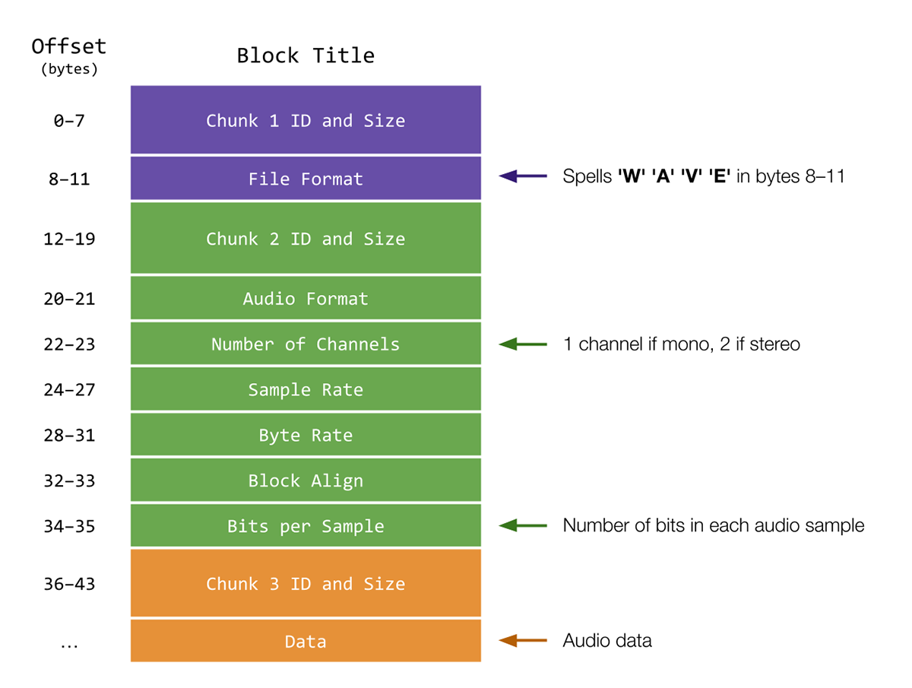

Reverse
Implemente um programa que inverta um arquivo WAV, conforme abaixo.
./reverse input.wav output.wav
Contexto
Na música "Fire on High" da Electric Light Orchestra, há algo um pouco estranho nos primeiros minutos da música. Se você ouvir, parece quase como se o áudio estivesse tocando ao contrário. Como acontece, se você reproduzir a seção inicial da música ao contrário, você ouvirá o seguinte:
"The music is reversible. Time is not. Turn back, turn back!"
Assustador, não é? Essa é uma técnica chamada "backmasking", ou seja, esconder mensagens na música que só podem ser ouvidas quando a música é tocada ao contrário. Muitos artistas usaram (ou foram suspeitos de usar) essa técnica em suas músicas. Para poder fazer nossa própria investigação sobre o backmasking, pedimos que você escreva um programa que possa inverter arquivos WAV para nós!
Ao contrário de arquivos de áudio MP3, os arquivos WAV não são comprimidos. Isso torna os arquivos muito mais fáceis de editar e manipular, o que é útil para a tarefa em questão. Para aprender um pouco mais sobre arquivos WAV, precisamos dar uma olhada mais de perto no formato de arquivo WAV.
Começando
Acesse o code.cs50.io, clique na sua janela do terminal e execute cd sozinho. Você deve encontrar que o prompt da sua janela do terminal se assemelha ao abaixo:
$Em seguida, execute
wget https://cdn.cs50.net/2022/fall/psets/4/reverse.zipPara baixar um arquivo ZIP chamado reverse.zip em seu codespace.
Em seguida, execute
unzip reverse.zippara criar uma pasta chamada reverse. Você não precisa mais do arquivo ZIP, então pode executar
rm reverse.zipe responda com "y" seguido de Enter no prompt para remover o arquivo ZIP que você baixou.
Agora digite
cd reverseseguido de Enter para mover-se para (ou seja, abrir) esse diretório. Seu prompt agora deve se parecer com o abaixo.
reverse/ $Se tudo ocorreu com sucesso, você deve executar:
lse veja um arquivo chamado reverse.c e 'card.raw'. Executando code reverse.c deverá abrir o arquivo onde você irá digitar o seu código para este conjunto de problemas. Se não, refaça seus passos e veja se consegue determinar onde errou!
O formato de arquivo WAV
Observe que, na imagem abaixo, um arquivo WAV é dividido em três blocos. Cada bloco contém alguns blocos de dados.
O primeiro bloco contém informações sobre o tipo de arquivo. Em particular, observe como o bloco "Formato do arquivo" no primeiro bloco soletra 'W''A''V''E' nos bytes 8-11, para indicar que o arquivo é um arquivo WAV.
O segundo bloco contém informações sobre os próximos dados de áudio, incluindo quantos "canais" de áudio estão presentes e quantos bits há em cada "amostra" de áudio. Arquivos de áudio têm 1 canal quando são "monofônicos": se você estiver usando fones de ouvido, ouvirá o mesmo áudio em sua orelha esquerda e direita. Arquivos de áudio têm 2 canais quando são "estereofônicos": usando fones de ouvido, você ouvirá áudios ligeiramente diferentes em sua orelha esquerda e direita, criando uma sensação de espaço. As amostras são os blocos individuais de bits que compõem o áudio que você ouve. Com mais bits por amostra, um arquivo de áudio pode ter maior clareza (ao custo de mais memória usada!).
Finalmente, o terceiro bloco contém os dados de áudio em si - as amostras mencionadas acima.
Tudo antes dos dados de áudio é considerado parte do "cabeçalho" WAV. Lembre-se de que um cabeçalho de arquivo é simplesmente alguns metadados sobre o arquivo. Neste caso, o cabeçalho tem 44 bytes de comprimento.

Uma explicação mais técnica dos cabeçalhos WAV pode ser encontrada aqui, que é a fonte pela qual esta imagem foi inspirada. Observe que incluímos um arquivo, wav.h, que implementa todos esses detalhes para você em uma struct chamada WAVHEADER.
Especificação
Vamos escrever um programa chamado reverse que nos permita reverter um arquivo WAV fornecido pelo usuário e criar um novo arquivo WAV que contenha o áudio resultante revertido. Para simplificar, limitaremos os arquivos que lidamos ao formato WAV. No momento em que o usuário executa o programa, ele deve fornecer, usando dois argumentos de linha de comando, o nome do arquivo de entrada a ser lido e revertido e o nome do arquivo de saída em que eles gostariam de salvar o áudio resultante. Um programa executado com sucesso não deve produzir nenhum texto e deve criar um arquivo WAV com o nome especificado pelo usuário que reproduza o áudio do arquivo WAV de entrada invertido. Por exemplo:
$ ./reverse input.wav output.wav
No arquivo reverse.c, você notará que algumas bibliotecas úteis foram incluídas, bem como um arquivo de cabeçalho, wav.h. Provavelmente você vai achar isso útil ao implementar seu programa. Deixamos oito TODOs e duas funções auxiliares para você preencher e recomendamos que você os aborde em ordem de 1 a 8.
- No primeiro
TODO, você deve garantir que o programa aceite dois argumentos da linha de comando: o nome do arquivo WAV de entrada e o nome do arquivo WAV de saída. Se o programa não atender a essas condições, você deve imprimir uma mensagem de erro apropriada e retornar1, encerrando o programa.- Dica
- Lembre-se de que o número de argumentos da linha de comando pode ser encontrado na variável
argcpassada para a funçãomainquando o programa é executado. - Lembre-se de que
argv[0]contém o nome do programa como o primeiro argumento da linha de comando.
- Lembre-se de que o número de argumentos da linha de comando pode ser encontrado na variável
- Dica
- No segundo
TODO, você deve abrir o arquivo de entrada. Precisamos abrir o arquivo de entrada em modo "somente leitura", já que só leremos dados do arquivo de entrada. Pode ser prudente verificar se o arquivo foi aberto com sucesso. Caso contrário, você deve imprimir uma mensagem de erro apropriada e retornar1, encerrando o programa. Devemos aguardar para abrir o arquivo de saída, no entanto, para não criarmos um novo arquivo WAV antes de saber se o arquivo de entrada é válido!- Dica
- Se o primeiro
TODOtiver sido implementado corretamente, é seguro assumir que podemos fazer referência ao nome do arquivo de entrada usandoargv[1]. - Lembre-se de que qualquer arquivo que abrirmos, também devemos fechar quando terminarmos de usá-lo. Isso pode significar adicionar código em outro lugar no programa.
- Se o primeiro
- Dica
-
No terceiro
TODO, você deve ler o cabeçalho do arquivo de entrada. Lembre-se de que, emwav.h, já implementamos uma estrutura que pode armazenar o cabeçalho de um arquivo WAV. Como escrevemos#include "wav.h"no topo dereverse.c, você também pode usar a estruturaWAVHEADER. -
No quarto
TODO, você deve completar a funçãocheck_format.check_formatrecebe um único argumento, umWAVHEADERchamadoheader, representando uma estrutura contendo o cabeçalho do arquivo de entrada. Se oheaderindicar que o arquivo é de fato um arquivo WAV, a funçãocheck_formatdeve retornartrue. Caso contrário,check_formatdeve retornarfalse. Para verificar se um arquivo está no formato WAV, podemos comparar os elementos do cabeçalho do arquivo de entrada com aqueles que esperamos de um arquivo WAV. Basta mostrar que os caracteres do marcador "WAVE" são encontrados no membroformatda estruturaWAVHEADER(consulte Contexto para obter mais detalhes sobre os cabeçalhos de arquivos WAV). - No quinto
TODO, você agora pode abrir com segurança o arquivo de saída para escrita. Ainda é recomendável verificar se o arquivo foi aberto com sucesso.- Dicas
- Se o primeiro
TODOfoi implementado corretamente, é seguro assumir que podemos referenciar o nome do arquivo de saída usandoargv[2]. - Lembre-se de que qualquer arquivo que abrimos, também devemos fechar quando terminarmos de usá-lo. Isso pode significar adicionar código em outro lugar no programa.
- Se o primeiro
- Dicas
Este pode ser um bom lugar para parar e testar se o seu programa se comporta conforme o esperado. Se implementado corretamente, o seu programa deve abrir um novo arquivo quando executado com os argumentos corretos da linha de comando.
Se em algum momento você achar necessário excluir um arquivo, execute o seguinte comando no diretório de trabalho atual.
$ rm file_name.wav
Se você preferir não ser solicitado a confirmar cada exclusão, execute o comando abaixo em vez disso.
$ rm -f file_name.wav
Apenas tenha cuidado com o interruptor -f, pois ele "força" a exclusão sem solicitar confirmação.
-
Em seguida, agora que o tipo de arquivo foi verificado, a sexta
TODOnos diz para escrever o cabeçalho no arquivo de saída. O arquivo WAV invertido ainda terá a mesma estrutura de arquivo subjacente do arquivo de entrada (mesmo tamanho, número de canais, bits por amostra, etc.), então é suficiente copiar o cabeçalho que lemos do arquivo de entrada na terceiraTODOpara o arquivo de saída. - Na sétima
TODO, você deve implementar a funçãoget_block_size.get_block_size, assim comocheck_format, recebe um único argumento: este é umWAVHEADERchamadoheader, representando a estrutura que contém o cabeçalho do arquivo de entrada.get_block_sizedeve retornar um inteiro representando o tamanho do bloco do arquivo WAV fornecido, em bytes. Podemos pensar em um bloco como uma unidade de dados auditivos. Para áudio, calculamos o tamanho de cada bloco com o seguinte cálculo: número de canais multiplicado por bytes por amostra. Felizmente, o cabeçalho contém todas as informações necessárias para calcular esses valores. Certifique-se de consultar a seção Contexto para uma explicação mais detalhada sobre o que esses valores significam e como são armazenados. Consulte tambémwav.hpara determinar quais membros deWAVHEADERpodem ser úteis. - Dicas
- Observe que um dos membros de
WAVHEADERébitsPerSample. Mas para calcular o tamanho do bloco, você precisará dos bytes por amostra! - O oitavo e último
TODOé onde ocorre a reversão real do áudio. Para fazer isso, precisamos ler cada bloco de dados auditivos começando do final do arquivo de entrada e movendo-se para trás, escrevendo simultaneamente cada bloco no arquivo de saída para que sejam escritos na ordem inversa. Primeiro, devemos declarar uma matriz para armazenar cada bloco que lemos. Em seguida, cabe a você iterar pelos dados de áudio do arquivo de entrada. Você vai querer ter certeza de que leu todo o áudio, mas não copiou erroneamente nenhum dos dados do cabeçalho! Além disso, para fins de teste, gostaríamos de manter a ordem dos canais para cada bloco de áudio. Por exemplo, em um arquivo WAV com dois canais (som estereofônico), queremos ter certeza de que o primeiro canal do último bloco de áudio na entrada se torna o primeiro canal do primeiro bloco de áudio na saída. - Dicas
- Algumas funções (e um entendimento aprofundado de seu uso) podem ser especialmente úteis ao concluir esta seção - as páginas do manual CS50 podem ser especialmente úteis aqui:
fread: lê de um arquivo para um buffer. A saída da função auxiliarget_block_sizepode ser útil aqui ao decidir quais valores usar para o tamanho e número de dados a serem lidos de uma vez.fwrite: grava de um buffer em um arquivo.fseek: define um ponteiro de arquivo para um determinado deslocamento. Pode ser útil experimentar com valores de deslocamento negativos para mover um ponteiro de arquivo para trás.ftell: retorna a posição atual de um ponteiro de arquivo. Pode ser útil inspecionar qual valorftellretorna depois que o cabeçalho de entrada é lido na terceiraTODOalém do que ele retorna durante a leitura dos dados de áudio.
- Lembre-se de que, depois de usar o
freadpara carregar um bloco de dados, o ponteiro deinputestará apontando para a posição em que a leitura terminou. Em outras palavras, o ponteiro deinputpode precisar ser movido de volta em dois tamanhos de bloco após cadafread, um para voltar ao início dofread, e o segundo para mover para o bloco anterior não lido. - Por fim, certifique-se de fechar todos os arquivos que você abriu!
Uso
Aqui estão alguns exemplos de como o programa deve funcionar. Por exemplo, se o usuário omitir um dos argumentos da linha de comando:
$ ./reverse input.wav
Usage: ./reverse input.wav output.wav
Ou se o usuário omitir ambos os argumentos da linha de comando:
$ ./reverse
Usage: ./reverse input.wav output.wav
Aqui está como o programa deve funcionar se o usuário fornecer um arquivo de entrada que não seja um arquivo WAV real:
$ ./reverse image.jpg output.wav
Input is not a WAV file.
Você pode assumir que o usuário insere um nome de arquivo de saída válido, como output.wav.
Um programa executado com sucesso não deve imprimir nenhum texto e deve criar um arquivo WAV com o nome especificado pelo usuário que reproduza o áudio do arquivo WAV de entrada ao contrário. Por exemplo:
$ ./reverse input.wav output.wav
Testando
Execute o abaixo para avaliar a correção do seu código usando check50. Mas certifique-se de compilar e testar também!
check50 cs50/problems/2023/x/reverseExecute o código abaixo para avaliar o estilo do seu código usando style50.
style50 reverse.cComo Submeter
No seu terminal, execute o comando abaixo para submeter o seu trabalho.
submit50 cs50/problems/2023/x/reverse